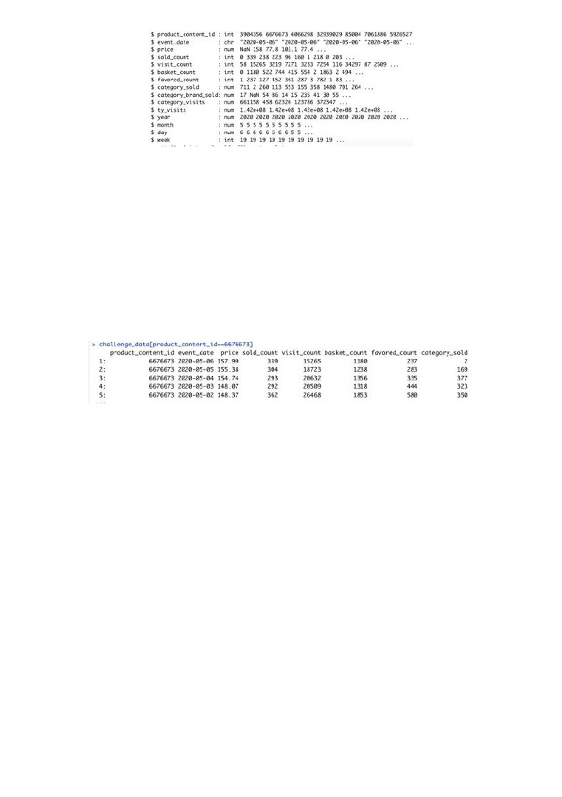
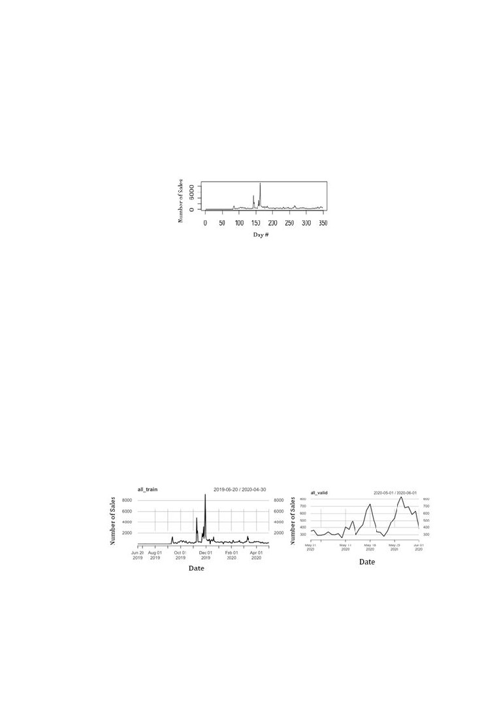
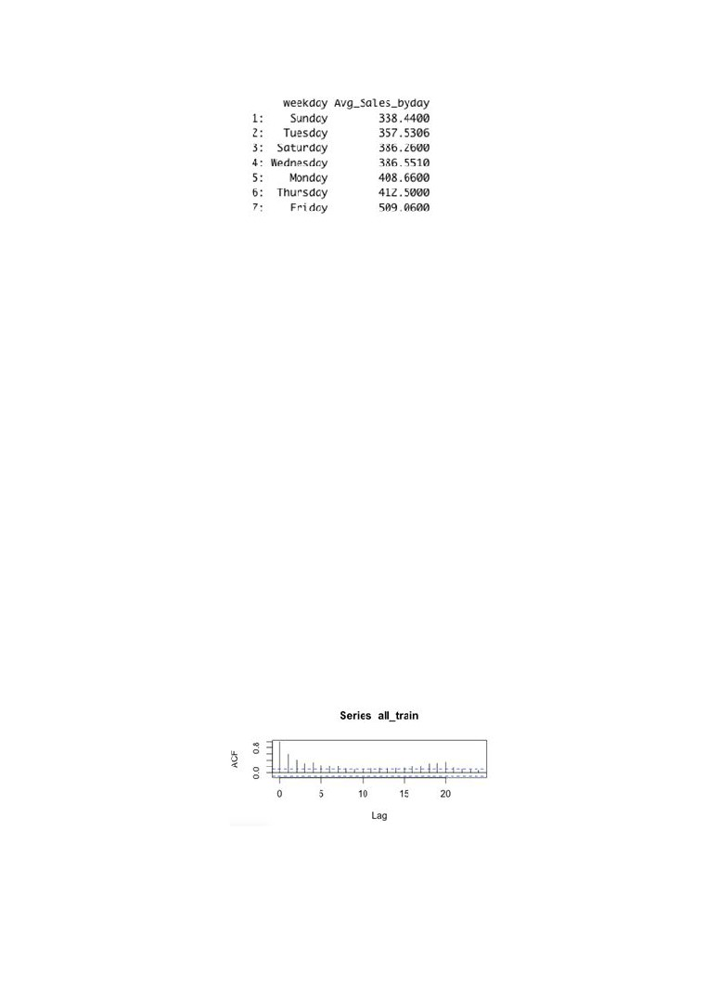
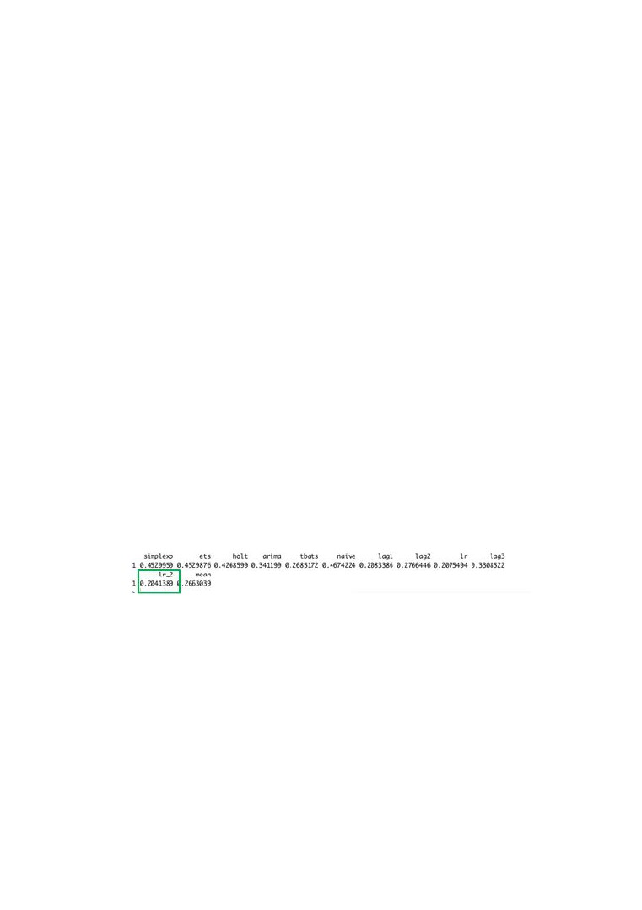
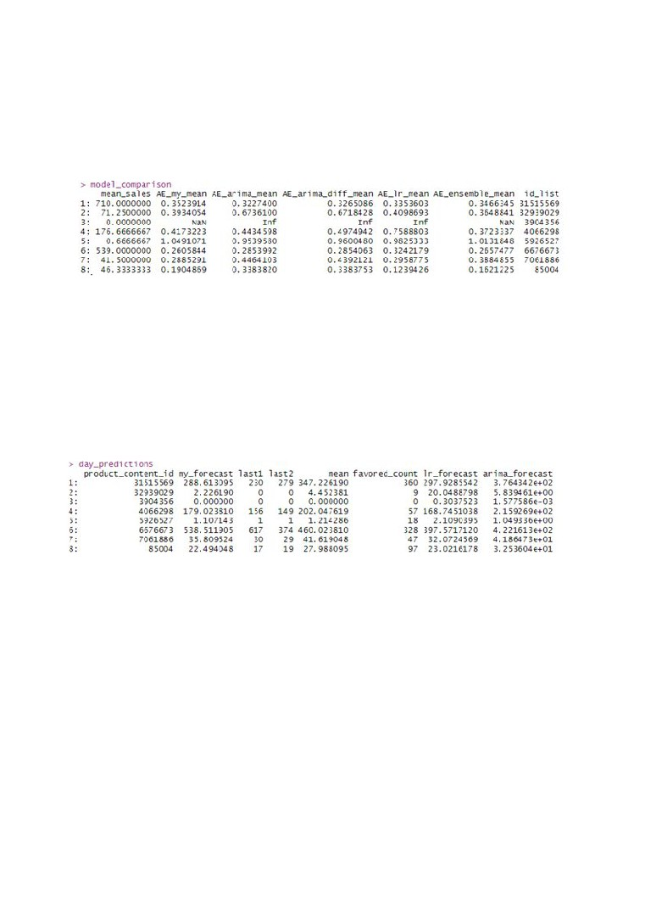

IE 360
Statistical Forecasting and Time Series
Trendyol Sales Forecasting
Project Report
Ataberk SEVİM
Ayberk AKGÜN
Dilara Gizem GÜLKAN
Mustafa Şahin ÇAKIR
Utku ATAY
Supervisor: Mustafa Gökçe BAYDOĞAN
Date of Submission: 06.07.2020
Department of Industrial Engineering
Boğaziçi University
TABLE OF CONTENTS
1.
Introduction
1.1. Problem Definition
1.2. Summary of Proposed Approach
1.3. Descriptive Analysis
2.
Literature Review
3.
Solution Approach
4.
Results and Discussion
5.
Conclusion and Future Work
6.
Code
1. Introduction
1.1. Problem Definition
In this project, our aim is to develop a forecasting model to predict the daily sales of
eight products that are sold in Trendyol. Every day for a month, we were expected to submit
our predictions of the daily sales of each product.
This project was a challenge that was created with the support of Trendyol to
encourage the teams to build a forecasting tool that can be utilized in business applications.
Each team has gained points every day, depending on how accurate their predictions were. At
the end of the challenge period, the overall scores show the success and accuracy of the
teams.
The characteristics of the products are given below in Table 1. We have used the
forecasting methods that we’ve learned in IE 360 lectures and from the DataCamp
1
assignments to build our forecasting model. We were accessing the most recent data (which
includes the sales of the previous day) through an application programming interface.
Table 1: Product Characteristics
1.2. Summary of Proposed Approach
As a starting point, during the test period, we all have selected two products to
analyze in detail. After this deep dive analysis, we have shared our findings on the products
with each other so that we were on the same page and had the same knowledge. We’ve tried
out the methods that we’ve learned from the lectures and DataCamp assignments. We’ve
discussed the initial models that we’ve formed individually. We’ve decided on which
approaches to try and implement on each product. Then, we were at the stage to come up
with a holistic forecasting model using all this knowledge from our initial descriptive analysis
and forecasting method trials. Our final proposed approach to predict the online retail sales of
eight Trendyol products is a forecasting model that will be discussed in detail in later
sections.
1.3. Descriptive Analysis of Data
Aside from the daily sales data, we were provided with many daily attributes such as
price, number of viewings, number of markings as favorite product as shown in the figure
below:
2

Figure 1: Contents of the Data
The last four time-related attributes on the list in the figure are added by us to make
easier manipulations on the data. In order to make the descriptive analysis separately on the
products, we’ve abstracted a single product ID at a time from the raw data and started the
analysis. As an example, let’s take the product with the ID 6676673 which is a Xiaomi
earphone.
Figure 2: An Example of Single Product Abstraction
First we’ve observed the sales of the specified product throughout the time period.
·
Data Period: 30.04.2019 - 13.06.2020
·
Challenge Period: 16.05.2020 - 13.06.2020
During the challenge period, we were provided with the actual sales of the previous
day to be able to improve our model or try different approaches. The graph below shows the
outliers and sales trends in our data. For this earphone product, the first 52 days were omitted
during our forecasting trials since there were zero sales. We’ve assumed that the product was
not listed in Trendyol until 20.06.2019.
3

The maximum number of sales occurred in Black Friday (29.11.2019) which was
around 9K sales. Aside from Black Friday outlier, there were a couple more outliers around
3K. In some of our attempts to improve our models, we’ve omitted the outliers by changing
their sales manually to the overall average so that they wouldn’t act as outliers anymore. In
some cases, we’ve let the outliers stay in the data as-is.
Figure 3: All Sales Data of Product No. 6676673
We had to divide our data in two parts as the training set and the test set to see if our
manipulations on the training set will result in meaningful forecasts that match with the test
set. We’ve tried a few different training and test set periods but the one that we’ve decided to
go with was the following:
·
Training dates: From the beginning of data to 30.04.2020 (For the earphone product,
beginning is 20.06.2019 as mentioned before)
·
Test dates: 01.05.2020 - most recent data
The graphs that show the number of sales in training and test sets of Product No.
6676673 are given below:
Figure 4&5: Training and Test Sets of Product No. 6676673
4

Figure 6: Average sales by day of the week of Product No. 6676673
We’ve tried to find out the specific properties of the sales. As the above figure
demonstrates, we’ve checked if the sales depend on the day of the week. We wanted to see if
the sales are higher significantly on the weekend but in this case the sales on weekend were
lower than most days.
In this descriptive analysis stage, we’ve also checked if the number of sales correlates
with the price, basket count, etc. The goal was to catch specific attributes of each product to
be able to build our models on strong grounding.
We’ve checked the autocorrelation of the sales data to see if there was any obvious
seasonality that we can make use of. Below is the autocorrelation function graph of the
earphone. There was no seasonality effect for this product. The frequency is 1. That is why
we couldn’t utilize the deseasonalizing/detrending methodology that we’ve learned in our
lectures.
Figure 7: Autocorrelation Function of Product No. 6676673
5

After figuring out if there was any seasonality, we’ve tried some simple forecasting
methods such as
·
Simple Exponential Smoothing
·
Exponential Smoothing with ETS
·
Holt's Trend
·
ARIMA
·
TBATS
·
Naïve Forecasting
·
Linear Regression
·
Mean Forecast
To be able to see which one suits the sales data of the earphone better, we’ve made
comparisons between the methods by simply checking the errors. For this product, we’ve
checked the MAPE as shown below:
Figure 8: MAPE Values of Product No. 6676673
The lowest MAPE indicates the better method. In this case, lr_2 has the lowest
MAPE. This linear regression variation considers lag1, lag2 and lag3 values. Of course, this
result does not mean that we should use this LR method to forecast sales during the
challenge. This phase is just a guide to the holistic approach that will be mentioned in later
sections. Also, some of the methods such as ARIMA and linear regression will be discussed .
6
2. Literature Review
While discussing and trying out different models, Forecasting: Principles and Practice
by Hyndman and Athanaspoulos has been a guide throughout the process. Whenever we were
unsure about the statistics behind, we referred to the textbook which is available online.
While adding visit count, sold count and their relation to the big picture were the
biggest challenges of the project, we reviewed Moe and Fader’s article on Dynamic
Conversion Behavior at E-Commerce Sites. The lack of availability of customer based
information and distinct characteristics of products, contribution of conversion rate was
limited for our purpose.
3. Solution Approach
Our initial approach to the problem was analysing the data. There were 8 products
with different prices and different sales values. Before using the data, we drop some of the
dates. In some products, sales values were 0 and price was -1 until a date. These dates are
dropped with the assumption that this product has not sold until that date. After the
preprocessing, we decided to go with 5 different models which are:
● Naive
● Arima
● Differenced Arima
● Linear Regression
● Ensemble Method
7
Each day, we trained these 5 models with the new data and then predicted the next day with
the best model in terms of MAPE. Therefore, rather than using a single model, each day we
were able to catch new data in our model and also, if another model gives better results with
the new data. We were able to switch between them, this way we created a flexible prediction
system.
Naive
Our naive method consisted of two components. First one is today’s data and the mean of all
sales for a product. Naive method basically, predict next sales value as average of mean of
the sales and lag 1 data. When we were building the naive model, our aim was feeding the
ensemble data with naive predictions. Since predicting only using naive methods will
underfit.
ARIMA
We used basic arima process using auto.arima() function. While calculating the MAPE for
comparison, cross validation is used. Rather than choosing a specific ARIMA process for
each product. We trained ARIMA processes continuously for each new train data. We hoped
this model works better than most of the models, since sales data generally, correlated with
the past data and ARIMA works fairly well with correlated data.
Differenced ARIMA
This method is the same as the classic ARIMA method. However, rather than feeding the
model with past data. We fed the model with the sales increase between days. So this model
tries to understand increase in sales throughout the time.
8
Linear Regression
We tried different Linear Regression methods while building the last linear regression model.
Some of them contained the features Trendyol provided with the sales data and some of them
contained information about weekdays or if the date is weekend or not. We thought about
using the information about event dates, however we found out that there will be no specific
sales event at project timeline. Therefore, we created a linear regression model using the past
sales data. Regression model consisted of today’s data, yesterday’s data, mean of the last 7
days, the mean of the last 4 weeks and the favored count.
Ensemble Method
The motivation behind this method is to use all information from each model. Some of them
underfit, some of them overfit, however when we create an ensemble method, underfit and
overfit should compensate each other and give better results than each of them. Rather than
taking the average, we build linear regression to make predictions using the outputs of the
other 4 models. Using linear regression, we give weight to each model in our Ensemble
method.
4. Results and Discussion
5 different methods are used in the project to predict the daily sales of each product. It
is possible that performances of each method can vary from day to day. To find the most
appropriate method for each product every day, we study out a model comparison algorithm
which calculates absolute error for each method for each product. After observing the
9

absolute error, we selected the best method for that product and made predictions by using it.
We have repeated the same process every day. A different method can be assigned to the
same product on different days.
Figure 9: Model Comparison Table
The absolute errors of models for 12th July are given in Figure 9 above. Since product
3 is sold almost 0 in each day, our algorithm can’t find proper absolute errors for it. For
instance, arima method is the best for products 1 and 5, while ensemble method is the best
for products 2 and 4 for 12th July.
Figure 10: Day Predictions Table for 12th July
After finding the best fitting model for that day, we make predictions for products. As
already mentioned, we used different methods for products and our forecast values for 12th
July is expressed in figure 10 above. Last 1 and Last 2 columns show the last 2 days sales for
that product. We added those columns, because we want to see how our predictions are
consistent and reliable.
10
After the project, we want to find the best fitted model for each product to sum it up.
For two of the products, 3904356 and 5926527, there were rarely sales, so the forecast was
also 0. For the four of the remaining products, 32939029, 5926527, 7061886 and 85004 day
to day variability was relatively smaller. So, ARIMA models gave the better results most of
the time. The biggest challenge was however, forecasting 31515569 and 6676673 which
compose more than 80% of the sales, had a high day to day variability and are prone to
stockouts. Linear regression models were able to seize relations between independent
variables and the forecast, forecasting from two days ago created a setback. After the days of
stockouts however, a naive model was a good choice to provide a solid forecast.
5. Conclusion and Future Work
In this project, five different models were constructed namely Naive, ARIMA,
Differenced ARIMA, Linear Regression, and Ensemble. The detailed information about the
models were discussed in Solution Approach. These models were used to predict the daily
sales of eight different products which are currently available in Trendyol. While submitting
the predictions, instead of using a definite model for each product, we dynamically refreshed
the model choice with the most recent data and compared their performances based on
MAPE. Accordingly, we chose the model with the lowest MAPE and predicted the daily
sales.
As a future work, the ensemble method could be improved. Theoretically, the
ensemble method should have predicted the daily sales better than the others, however that
was not always the case. Furthermore, more detailed information related to the sales and
customers could be used while forecasting. For example, the price of the same product on
11
another e-commerce platform such as Amazon or Hepsiburada may have an effect on the
daily sales which we predicted in this project. Therefore, the inputs of the models could be
expanded to make more accurate predictions.
6. Code
12